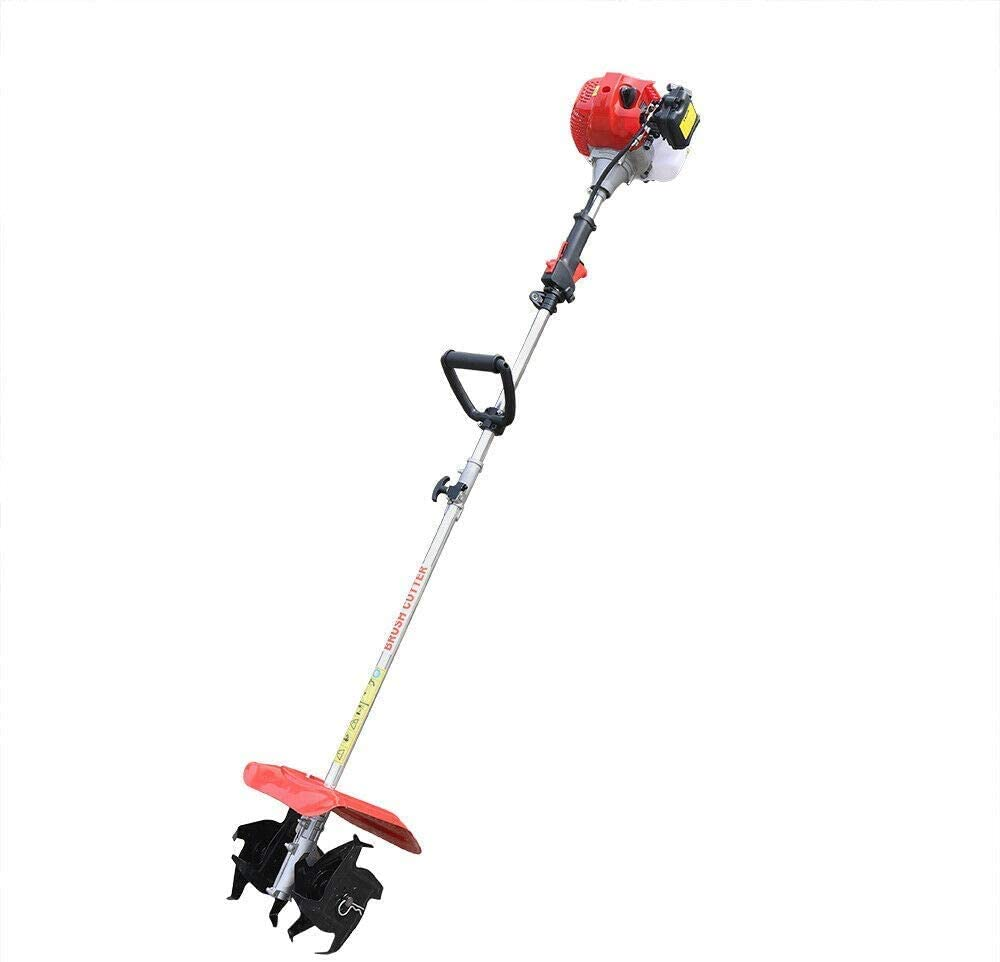
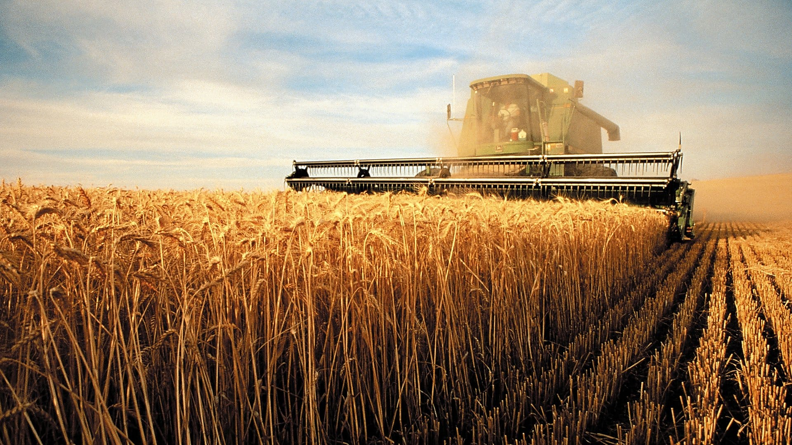
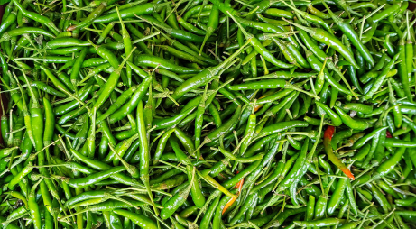

ये एक धान काटने की छोटी सी मशीन है जो छोटे से किसानो के लिए बहुत ही बेहतर है इसको किसान भाई आसानी से पास की किसी टेक्टर और
मशीन की दुकान से खरीद सकते है ये ऑनलाइन आसानी से मगाई जा सकती है इसकी कीमत 1000 है इसके बहुत से छोटी और काम पावर की
मशीन भी उपलब्ध है जिनकी कीमत 8000 से सुरु होती है इस मशीन का नाम Brush catter है और इस मशीन से हम अनेको काम कर सकते
है हम इसकी ब्लेड बदल का हम इससे खरपतवार भी काट सकते है और गेहू धान की फसल भी
काट सकते है इसकी मदद से कम 50 रूपये में एक बीघे का धान आसानी से कटा जा सकता है
ये अभी तक भरी मात्रा में पंजाब ,हरियाणा ,उत्तर प्रदेश आदि जगहे पर प्रयोग की जा रही है
ये एक धान लगाने की छोटी सी मशीन है जो छोटे से किसानो के लिए बहुत ही बेहतर है इसको किसान भाई आसानी से पास की किसी टेक्टर और मशीन की दुकान से खरीद सकते है
ये ऑनलाइन आसानी से मगाई जा सकती है इसकी कीमत 7500 है इसके बहुत से छोटी और काम पावर की मशीन भी उपलब्ध है जिनकी कीमत 4500 से सुरु होती है
इस मशीन का नाम Rice Transplanter Machine है
ये अभी तक भरी मात्रा में पंजाब ,हरियाणा आदि जगहे पर प्रयोग की जा रही है इस मशीन में किसी भी तरहे के डिसल ,
पेट्रोल की जरुरत नहीं है इस मशीन के द्वारा २ या ३ लोग मिल कर ये १ एकड़ में धान लगाया जा सकता है। इस मशीन को कोई भी ऑनलाइन या ऑफलाइन मांगा सकता है
ये एक धान लगाने की बड़ी सी मशीन है जो बड़े किसानो के लिए बहुत ही बेहतर है
इसको किसान भाई आसानी से पास की किसी टेक्टर और मशीन की दुकान से खरीद सकते है ये ऑनलाइन आसानी से मगाई जा सकती है
इसकी कीमत 100000(सरकार की सप्सेडी के बाद ) है इसके बहुत से छोटी और काम पावर की मशीन भी उपलब्ध है जिनकी कीमत 80000 से सुरु होती है ये अभी तक भरी मात्रा में पंजाब
,हरियाणा ,उत्तर प्रदेश आदि जगहे पर प्रयोग की जा रही है
इस मशीन का नाम Rice Transplanter Machine है
इस मशीन की मदद से हम 200 पेट्रोल से 1 एकड़ में धान लगाया जा सकता है
ये एक धान।,सोयाबीन जवा और गेहू काटने की बड़ी सी मशीन है जो बड़े किसानो के लिए बहुत ही बेहतर है
इसको किसान भाई आसानी से पास की किसी टेक्टर और मशीन की दुकान से खरीद सकते है ये ऑनलाइन आसानी से मगाई जा सकती है
इसकी कीमत 140000 है इसके बहुत से छोटी और काम पावर की मशीन भी उपलब्ध है जिनकी कीमत 80000 से सुरु होती है
ये अभी तक भरी मात्रा में पंजाब ,हरियाणा ,उत्तर प्रदेश आदि जगहे पर प्रयोग की जा रही है
इस मशीन का नाम Reaper machine है
इस मशीन की मदद से हम 100 पेट्रोल से 1 एकड़ में धान लगाया जा सकता है
ये फसल की निराई और गोनाई केलिए एक छोटी सी मशीन है जो बड़े किसानो के लिए बहुत ही बेहतर है
इसको किसान भाई आसानी से पास की किसी टेक्टर और मशीन की दुकान से खरीद सकते है ये ऑनलाइन आसानी से मगाई जा सकती है
इसकी कीमत 13000 है इसके बहुत से छोटी और काम पावर की मशीन भी उपलब्ध है जिनकी कीमत 9000 से सुरु होती है
ये अभी तक भरी मात्रा में पंजाब ,हरियाणा आदि जगहे पर प्रयोग की जा रही है
इस मशीन का नाम Mini Power Wender Machine है
इस मशीन की मदद से हम 200 पेट्रोल से 1 एकड़ में निराई और गोनाई की जा सकता है
ये गिरी हुई फसल को काटने केलिए एक छोटी सी मशीन है जो किसानो के लिए बहुत ही बेहतर है
इसको किसान भाई आसानी से पास की किसी टेक्टर और मशीन की दुकान से खरीद सकते है ये ऑनलाइन आसानी से मगाई जा सकती है
इसकी कीमत है इसके बहुत से छोटी और काम पावर की मशीन भी उपलब्ध है जिनकी कीमत ९००० से सुरु होती है
ये अभी तक भरी मात्रा में पंजाब ,हरियाणा आदि जगहे पर प्रयोग की जा रही है
इस मशीन का नाम Mini Reaper Machine है
इस मशीन की मदद से हम 200 पेट्रोल से 1 एकड़ में धान काटा जा सकता है

ये फसल की निराई और गोनाई केलिए एक छोटी सी मशीन है जो बड़े किसानो के लिए बहुत ही बेहतर है
इसको किसान भाई आसानी से पास की किसी टेक्टर और मशीन की दुकान से खरीद सकते है ये ऑनलाइन आसानी से मगाई जा सकती है
इसकी कीमत 1800-4500 है
ये अभी तक भरी मात्रा में पंजाब ,हरियाणा आदि जगहे पर प्रयोग की जा रही है
इस मशीन का नाम Mini hand Wender Machine है
ये एक खेत जोतने की मध्यम सी मशीन है जो बड़े किसानो के लिए बहुत ही बेहतर है
इसको किसान भाई आसानी से पास की किसी टेक्टर और मशीन की दुकान से खरीद सकते है ये ऑनलाइन आसानी से मगाई जा सकती है
इसकी कीमत 100000(सरकार की सप्सेडी के बाद ) है इसके बहुत से छोटी और काम पावर की मशीन भी उपलब्ध है
जिनकी कीमत 80000 से सुरु होती है ये अभी तक भरी मात्रा में पंजाब
,हरियाणा ,उत्तर प्रदेश आदि जगहे पर प्रयोग की जा रही है
इस मशीन का नाम Rice Transplanter Machine है
इस मशीन की मदद से हम 200 पेट्रोल से 1 एकड़ में जोता जा सकता है

हाइब्रिड धान की ये 4 उन्नत किस्म 6444GOLD,6129GOLD,JK2082,NK6302
है जिनको लगा कर हमारे किसान भाई अत्यधिक धान की पैदावार कर सकते
है इन धान के बीजो में रोग लगने का खतरा काम होता है ये फसल 120-130 दिन में तैयार हो जाती है
ये फसल कम पानी वाले स्थानों में भी अच्छी पैदावार देती है ये फसल काफी मजबूत होती है इसलिए जल्दी खेतो में गिरती नहीं है
ये लगभक 30-35 कुंतल प्रति एकड़ होती है
पूसा बासमती 1121,पूसा बासमती 1509
ये पतले धान की किस्म है जिसकी पैदावार 20-25 कुंतल प्रति एकड़ होती है
ये फसल कम पानी वाले स्थानों में भी अच्छी पैदावार देती है

हाइब्रिड गेहू की ये ५ उन्नत किस्म Hi8498,HD3298,पूषा मालवा ,श्री राम सुपर 111,श्री राम 303 है
जिनको लगा कर हमारे किसान भाई अत्यधिक गेहू की पैदावार कर सकते है
इन गेहू के बीजो में रोग लगने का खतरा काम होता है ये फसल 120-130 दिन में तैयार हो जाती है ये फसल 4-5 पानी लेती
है ये फसल काफी मजबूत होती है इसलिए जल्दी खेतो में गिरती नहीं है ये लगभक 25-31 कुंतल प्रति एकड़ होती है

हाइब्रिड मिर्च की ये ५ उन्नत किस्म AK47,VNR-Sunidhi,VNR305,नामधारी 1701 है जिनको लगा कर हमारे किसान भाई अत्यधिक मिर्च की पैदावार कर सकते है
इन गेहू के बीजो में रोग लगने का खतरा काम होता है ये फसल 50-70 दिन में तैयार हो जाती है
हाइब्रिड प्याज़ की ये ५ उन्नत किस्म POONA FURSUNGI,Nashik Red 153,BSS441,Ellora Gulabi है जिनको लगा कर हमारे किसान भाई अत्यधिक प्याज़ की पैदावार कर सकते है
इन प्याज़ के बीजो में रोग लगने का खतरा काम होता है ये फसल 100-120 दिन में तैयार हो जाती है
ये फसल काफी मजबूत होती है इसलिए जल्दी खेतो में गिरती नहीं है ये लगभक 80-100 कुंतल प्रति बीघे होती है इसको सही रखने की अवधि है 4-8 महीने
हाइब्रिड आलू की ये 5 उन्नत किस्म चिप्सोना 1,पुखराज ,कुफरी गंगा कुफरी नीलकंठ ,कुफरी मोहन ,कुफरी थार-3 है जिनको लगा कर हमारे किसान भाई अत्यधिक आलू की पैदावार कर सकते है
इन आलू के बीजो में रोग लगने का खतरा काम होता है ये फसल 80-110 दिन में तैयार हो जाती है ये फसल ४-५ पानी लेती है
ये फसल काफी मजबूत होती है इसलिए जल्दी खेतो में गिरती नहीं है ये लगभक 80-100 कुंतल प्रति बीघे होती है

हाइब्रिड मकाई की ये 4 उन्नत किस्म NK30-Plus ,PIONEER P3401,BMH8255 GOLD, sygenta NK-30,है जिनको लगा कर हमारे किसान भाई अत्यधिक मकाई की पैदावार कर सकते है
इन ,मकाई के बीजो में रोग लगने का खतरा काम होता है ये फसल 110-130 दिन में तैयार हो जाती है
ये फसल काफी मजबूत होती है इसलिए जल्दी खेतो में गिरती नहीं है ये लगभक 30-35 कुंतल प्रति बीघे होती है
हाइब्रिड टमाटर की ये 4 उन्नत किस्म Abhilash seeds,Heem Shona seeds,Arka Rakshak seeds,Sahoo3251 है जिनको लगा कर हमारे किसान भाई अत्यधिक टमाटर की पैदावार कर सकते है इन ,टमाटर
के बीजो में रोग लगने का खतरा काम होता है ये फसल 70-80 दिन में तैयार हो जाती है ये फसल काफी मजबूत होती है
इसलिए जल्दी खेतो में गिरती नहीं है ये लगभक 40-50 टन प्रति एकड़ होती है

हाइब्रिड पपीता की ये ५ उन्नत किस्म Red Ledy,Ice Barrey,Taivan Red Lady 786 F1,Vinayak,Green Barrey है जिनको लगा कर हमारे किसान भाई अत्यधिक पपीता की पैदावार कर सकते है इन ,पपीता
के बीजो में रोग लगने का खतरा काम होता है ये फसल 210-240 दिन में तैयार हो जाती है ये फसल ४-५ पानी लेती है
ये फसल काफी मजबूत होती है इसलिए जल्दी खेतो में गिरती नहीं है ये लगभक 40-45 किलो प्रति पेड़ होती है